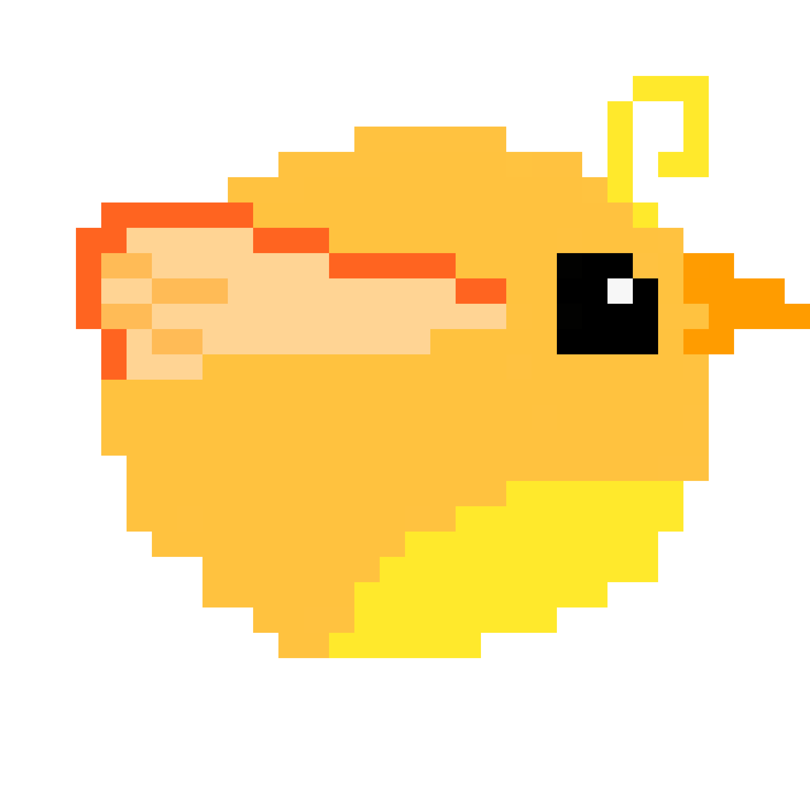

<!DOCTYPE html>
<html lang="en">

<head>
    <meta charset="UTF-8">
    <meta name="viewport" content="width=device-width, initial-scale=1.0">
    <title>Document</title>
</head>

<body>
    <!-- </img> -->
    <canvas id="canvas" width="1000" height="560" onclick="upbird(event)">
    </canvas>
    <script>
        function pos(){    
            var scale =0.5
           return  Math.random()*scale*(H-28)
        }

        var W = 1000
        var H = 560
       
        var h1 =[pos(),pos(),pos(),pos(),pos(),pos()]
        var h2 = 0.3*H

        var counter = 0
        var canvas = document.getElementById("canvas")

        if (canvas.getContext) {
            var context = canvas.getContext("2d");
            // context.globalCompositeOperation="destination-over";
        } else {
            console.error("不支持getContext");
        }
        //报告鼠标位置
        function showCoords(evt) {
            console.log(
                'clientX value: ' + evt.clientX + '\n' +
                'clientY value: ' + evt.clientY + '\n'
            );
        }


        var y = 100
        var x1 =1000
        var x2 =1200
        function clear(ctx) {
            ctx.beginPath();
            ctx.fillStyle = "rgba(255, 255, 255, 255)";
            ctx.fillRect(0, 0, canvas.width, canvas.height);
            ctx.stroke();

        }

        function draw(y) {

            //蓝天
            context.fillStyle = 'rgba(108,159,237,1)';
            context.fillRect(100, 20, canvas.clientWidth, canvas.clientHeight)
            /*小鸟（黄圈版）
            context.fillStyle = 'rgba(245,223,0,1)'

            context.arc(300, y, 20, 0, Math.PI * 2, true)
            context.fill()*/
            
            //小鸟
            bird1=new Image();
            bird1.src="bird"+(counter%4)+".png"
            context.drawImage(bird1,300,y,60,60)
            counter= counter+1
            /*许多柱子，竖长的长方形，中间有一个断层，匀速向左移动
            context.fillStyle='black'
            if (x1>80){
            context.fillRect(x1, 0,50,200)
            context.fillRect(x1, 400,50,200)
            }
            else {
                x1=800
            }
            if (x2>80){
            context.fillRect(x2, 100,50,300)
            context.fillRect(x2, 300,50,200)
            }
            else {
                x2=800
            }
            */
            //柱子生成
           
            context.fillStyle='black'
           
            for(var i=0; i<h1.length; i++){
                drawColumn(context, (x1%1000)+i*200, h1[i], h2)
            }
          
        }


       function  drawColumn(context, x1, h1,h2){
            var columnWidth = 50
            if(x1<80) x1+=1000
            context.fillRect(x1, 0,columnWidth, h1)
            context.fillRect(x1, h1+h2, columnWidth, H)
        }

        //游戏结束
        gameover = false
        
        //小鸟下落
        var birdfly = setInterval(function () {
            if (gameover){
                clearInterval(birdfly);
                alert("游戏结束，刷新以重来")
                return;
            }
            y = y + 5
            clear(context)
            draw(y)
            x1=x1-10
            x2=x2-10
            console.log(y)
            if(y < 35 || y >520) {
                gameover = true
            }
        }, 50)
        //小鸟向上
        upbird = function (event) {
            clientX = event.clientX + '\n'
            clientY = event.clientY + '\n'
            if (100 < clientX && clientX < 100 + canvas.clientWidth) {
                showCoords(event)
                y = y - 60
                console.log("第二个", y, event)
            }
        }
        //碰撞判定
        function inRectangle (x1, y1, x2, y2,x0,y0) {
        return x1<x0 && x0<x2 && y1<y0 && y0<y2
        }
            


    </script>
</body>

</html>